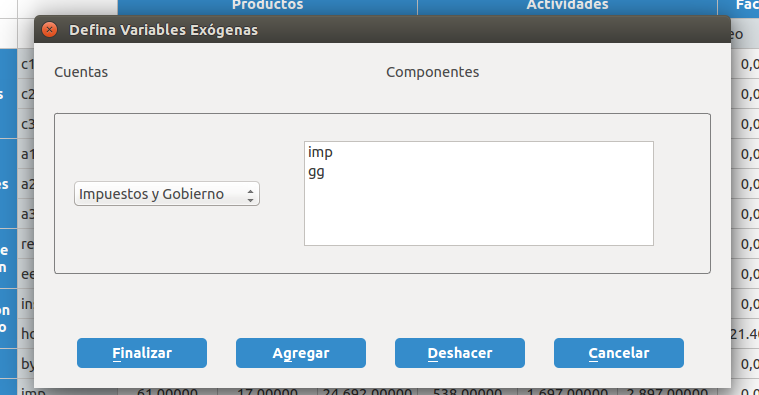
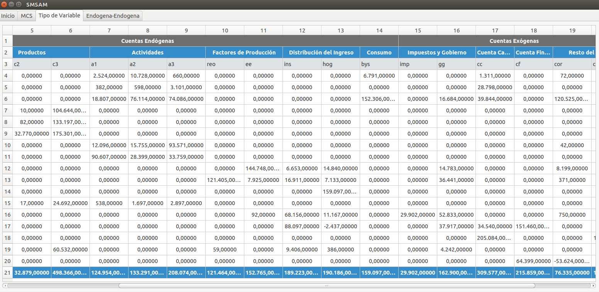
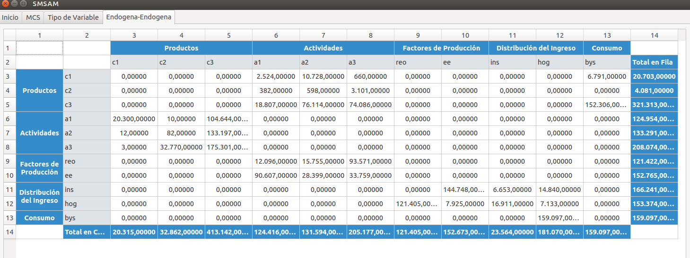
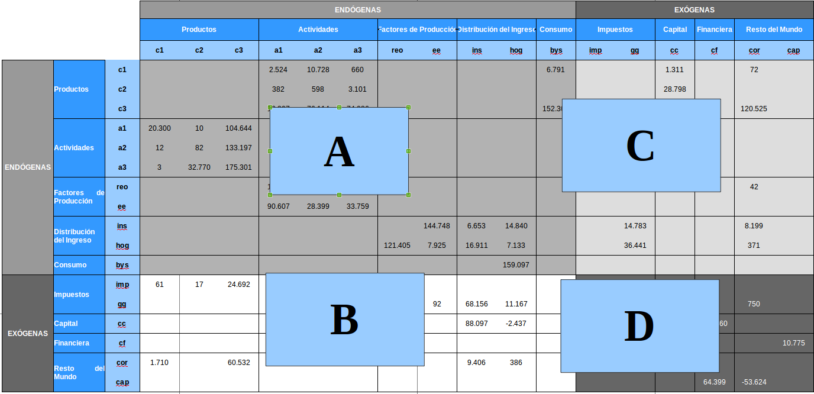

Manual de Usuario: Sistema para el Manejo de Matrices de Contabilidad Social
Sistema para el Manejo de las Matrices de Contabilidad Social
Definir Submatrices
Como se explicó en el apartado anterior, una matriz de contabilidad social está compuesta por una serie de cuentas (Ejemplo: Productos, Actividades, Factores de Producción, Distribución Primaria del Ingreso, Consumo, Cuenta Capital, Cuenta Financiera, Resto del mundo, entre otras) y cada una de estas tendrá asociada una serie de componentes (Por ejemplo, la cuenta Factores de producción puede estar compuesta por los elementos: Remuneración de asalariados, Excendente de explotación e ingreso mixto).
Ahora bien, para realizar análisis matricial, es necesario determinar en primer lugar los componentes que serán endógenos y exógenos. Para ello, sólo debe dirigirse al menú herramienta y hacer click en Definir Variables Exógenas, el sistema le mostrará una ventana emergente, solicitándole que seleccione una cuenta, mientras que en el panel ubicado en el lado derecho se presenta una lista de los componentes de la cuenta seleccionada. El usuario deberá seleccionar uno o más elementos y presionar el botón Agregar, deberá repetir este procedimiento si existe más de una cuenta exógena. Por último, se presiona el botón Finalizar

Figura 7: Definir Submatrices
Como resultado, el sistema se mostrará dos pestañas:
1.- Tipo de Variable: Muestra la matriz base en la columna y fila 1 el sistema define si es exógena o endógena.

Figura 8: Tipo de Variables
Endógena-Endógena.

Figura 9: Endogena-Endogena
Definir Tipo de Cuentas Para la construcción de los modelos de multiplicadores, es necesario definir las cuentas endógenas y exógenas, entendiendo que está última representa aquellas variables de políticas, que son estimadas fuera del modelo.
En la Figura 10, se presentan las cuatro submatrices que se crean una vez que se definen las variables:
A Endógena-Endógena: Esta submatriz es utilizada para estimar los multiplicadores de Leontief, por lo general las cuentas endógenas de una matriz de contabilidad social son: Productos, Actividades, Factores de Producción, Distribución Primaria del Ingreso y el Consumo.
B Endógena-Exógena: Se concentran aquellas cuentas y componentes que son variables de política, son empleadas para construir escenarios y estimar los efectos que la variación de éstas ejercen sobre el sistema económico.
C Exógena-Endógena: Permite calcular los multiplicadores exógenos, requeridos para estimar el impacto que se genera en el sistema y que afecta a la submatriz A.
D Exógena-Exógena: Esta submatriz no es utilizada para construir los modelos de multiplicadores, ni para evaluar impactos de políticas.

Figura 10: Tipo de Cuentas
Coefientes Técnicos
El Sistema de Manejo de Matrices de Contabilidad Social, estima y muestra en una pestaña los coefientes técnicos calculados a la Matriz Base. Para ello, el usuario sólo debe dirigirse al menú principal Herramientas --> Coeficientes Técnicos y seleccionar la opción de su preferencia:
Coeficientes Técnicos Horizontales: Estimado por medio del vector columna (total del i-ésima fila de la matriz base), conocido también como vector ingreso.
Coeficientes Verticales: Se obtiene dividiendo cada uno de los elementos de la matriz base, entre el vector fila o gasto (total de la j-ésima columna). De esta operación se obtiene la matriz conocida como An y que tiene las dimensiones de la Endógena-Endógena.
La matriz An es la división de cada uno de los elementos de la submatriz Endógena-Endógena con el total de la columna j-ésima de la matriz base.